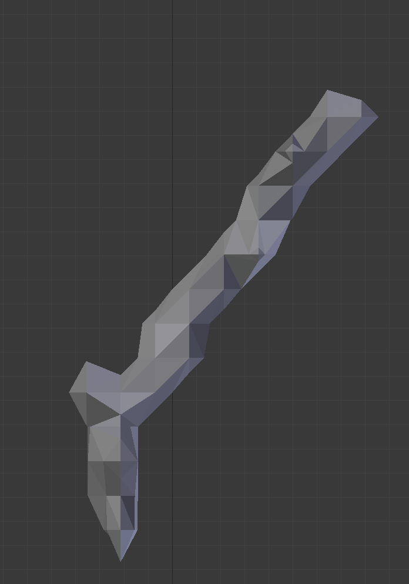
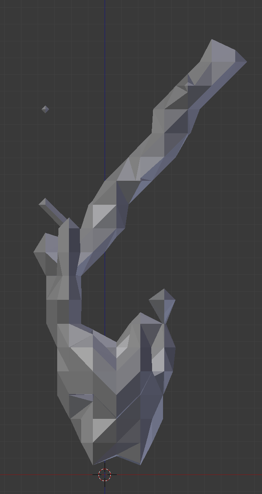
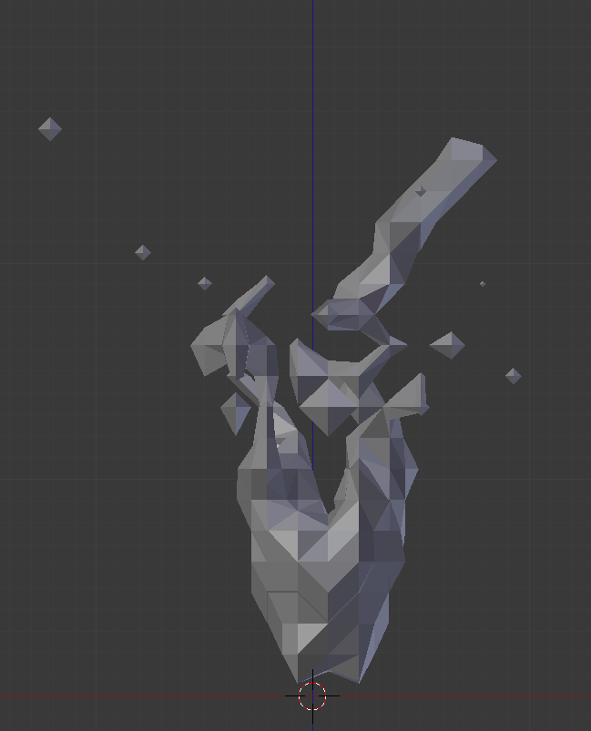
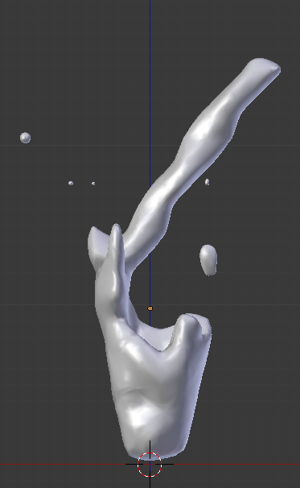
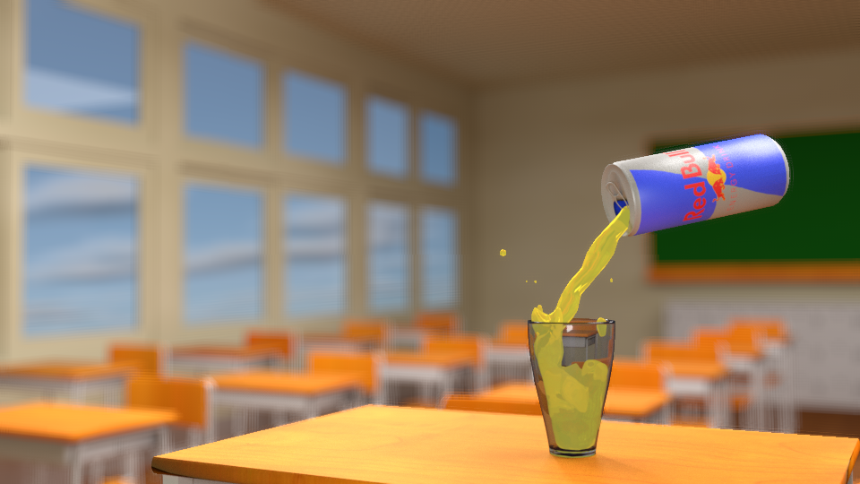

『レッドブル』というお題で行われた昨日のワンモデの続きです。
1時間という制限時間内にお題に沿ったモデルを作るという企画の続きです。プラス二時間でした
『レッドブル』というお題で行われた昨日のワンモデの続きです
昨日の時点で缶まではできていたのですが、中身をコップに注ぐとこまで行ってみたくてこれを改めて製作しました。
blenderの流体シミュレーションをいじるのは初めてではないのですが、経験豊富なわけではないので、他の人のホームページをみながら制作しました。
  流体シミュレーションを行った後、それを適応して、スカルプトモードで形を整えました。
これらのモデルにマテリアルをつけた。
液体のマテリアルがこの時少し薄暗い感じがしたので、液体をやや発光させてみた。
そして、前になんとなく作った教室を背景にして、教卓の上でレッドブルをそそぐことにした。
いや、特に深い意味はないです。
窓からの光と、電灯の光だけでは暗かったので、カメラのこちら側に面光源を用意して柔らかく光を当てた。
また、液体の部分がやはり暗かったのでこれをもう少し発光させた
最後に、教室に物を置いていないのでちゃんとレッドブルに目が行ってくれるかな？と思っていたが、実際はそうでもなかったので、被写体震度を調整してピンボケさせた。
